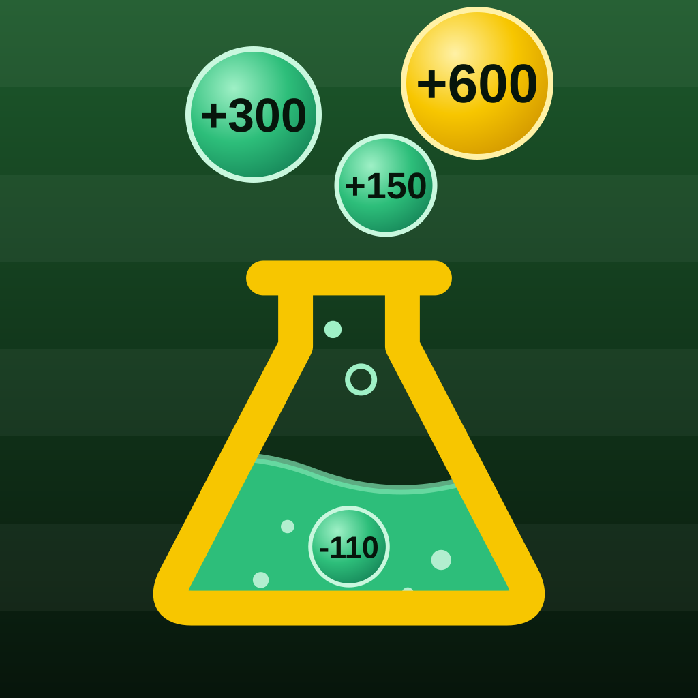

Yes shows the beginner help: what each number means, how a parlay works, how to place it. No keeps the screens simpler.
Your team gets its own parlay chip, comes first on the Games tab, and leads the spotlight. When they're off, you get the game of the week.
Changes only the accent color (buttons, tabs, highlights). Green, yellow and red on percentages keep their meaning.
Pick one or more. The slip gets an "Open in …" button for each, and the odds shown come from the one you choose below.
Show odds from
Pick the amount you usually bet. Every "wins $X" on the site uses it. Results still grades our picks at $10 each, so they stay comparable.
Or type your own: $
Saved on this phone until you delete the app from your home screen. Change it any time with ★.
Your saved bets, slip, teams, apps and settings live on this phone, tied to this web address. To bring them to a new home-screen app (like the new parlaylabs.net), tap Copy my data here, open the new app, come back to ★ › Move my data, paste it, and tap Bring it over.
ParlayLabs is for adults 21+ and for entertainment only. Picks and payouts are estimates, not guarantees. We are not responsible for any losses, and you bet at your own risk.
Sorry, you must be 21 or older to use this site.

Live NFL lines, matchup history, weather and player prop hit rates. Tap picks to build a parlay.
Loading lines…
Tap picks to add them. Your slip is in the bar at the bottom: tap Next slip there to save a bet and start another.
Loading props…
Every Monday: how last week's picks did, the best hit, the toughest miss, and whether we beat the closing line. It finishes filling in once Monday night's box scores post.
✓ won · ✗ lost · … waiting on the game
Only on this phone. Add them from a screenshot below, or from the slip with "Save to My bets." Tap 🔄 Check scores any time for live scores and finished games (while one of your games is on, it checks again every 2 minutes). The site also checks on its own after each game window. Each pick is marked ✓ or ✗ and the bet Won or Lost for you. The buttons are there if you want to set it yourself.
In FanDuel or DraftKings, open My Bets, screenshot the bet so the picks, odds and wager show, then pick it here, or copy it (tap the screenshot thumbnail, Share, Copy) and tap Paste screenshot. Several at once is fine. It's read on this phone; nothing is uploaded.
Paste a copied screenshot here, or the text from it (in Photos, press and hold the screenshot, tap Copy All).
Paste a code here (for example, one Claude made from your bet screenshots) and tap Add. Adding the same code twice won't duplicate bets.
Every auto-built slip on the Parlays page is saved at FanDuel's price when its first game kicks off, then graded from official box scores, usually a day or two after the game.
For every pick we save the price when we first posted it and the last price before its game started. If the line moved toward our pick, the betting market agreed with us. Doing that over and over is the earliest sign of a real edge, long before wins and losses settle down.
Some situations beat the book's price in every replayed season (unders in wind, unders for underdogs, rested players at home…) and some trail it (overs in wind, overs for big underdogs, stars the public loves). Each pick's signs add or take off a few points; ▲ and ▼ show the total. This is how the signs are doing on real picks since Nov 3.
The same pick (same side, same line) at both apps, checked at the same moment before kickoff. A better price doesn't change the chance to hit; it just pays more when it does.
For every game we lock our top-rated picks at kickoff, then grade them from the box score. "Books expected" is how many the sportsbooks' own prices said should hit; beating that is what counts.
Which slip types make money, and how each kind of bet actually hits compared with our estimate. Once a kind of bet has 15+ results, future estimates and slips are adjusted toward what really happened.
💬 Something confusing or wrong? Tell us
Opens your email to feedback@parlaylabs.net with this screen's details filled in.
Our estimate blends each player's hit rate with the book's price. Hit rates come from each player's last 10 regular-season games (this season and last), so it can't see injuries, role changes or matchups. Payouts for picks from the same game are estimates, since books price same-game parlays differently. Picks and payouts are estimates only. We are not responsible for losses; bet at your own risk. 21+ only. Read the full disclaimer. Gambling problem? Call 1-800-GAMBLER.